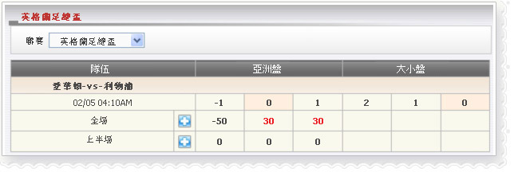

亞洲盤/大小盤/滾球
查看代理人'贏/輸數字根據亞洲盤/大小盤/滾球投注種類。

亞洲盤/大小盤/滾球
在這個例子中，會員投注 愛華頓-vs- 利物浦, 金額 = 100， 賠率 = 0.6， 代理占成=50%， 投注種類=亞洲盤，會員選擇: 埃弗頓 0.5
如果(主得分 - 客得分) >= 0 然後會員將贏
--> 代理將輸: 100 * 0.6 * 50% =
30
如果(主得分- 客得分) < 0 然後會員將輸
--> 代理將贏: 100 * 50% =
50